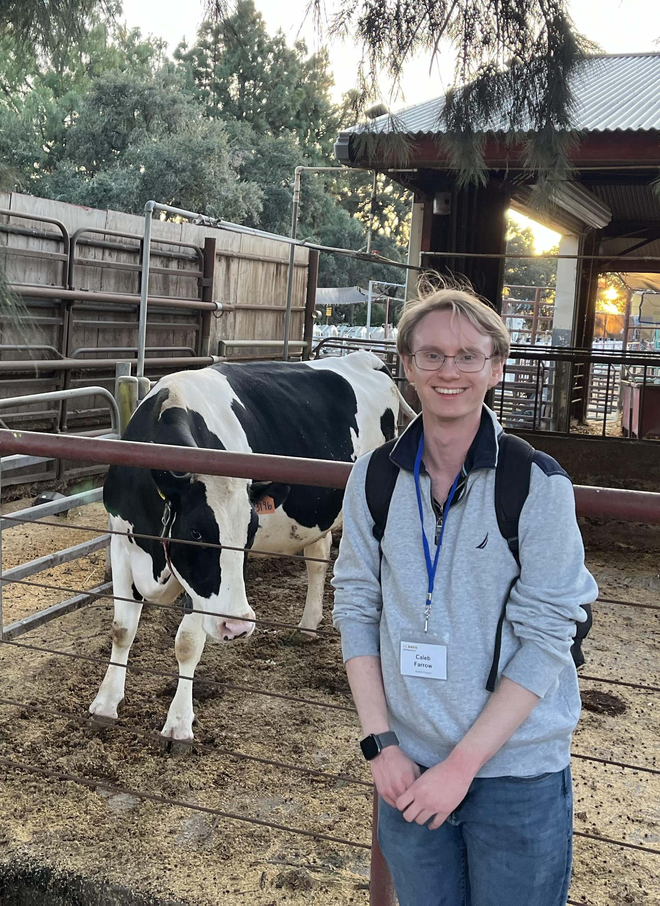

Caleb H. Farrow
Applied math PhD student
University of California, Davis
About me!
I'm starting my first year as a PhD student in applied mathematics at UC Davis. My current research project is with UC Davis Center for Neuroscience
in the Chaudhuri Lab, under the guidance of Rishidev Chaudhuri. We are studying the problem of pruning in neural networks. I graduated with a BS
in Mathematics with departmental honors from the University of Oregon, where I had the privilege of working with both Chris Sinclair in random
matrix theory and the Kern-Ralph colab in mathematical ecology and evolution.